GitLab CI Pipelines#
PETSc uses GitLab Pipelines for testing during continuous integration.
Do not overdo requesting testing; it is a limited resource, so if you realize a currently running pipeline is no longer needed, cancel it.
The pipeline status for a merge request (MR) is displayed near the top of the MR page and in the pipelines tab.
(The figures below are high resolution, so zoom in if needed)
{kind=link}
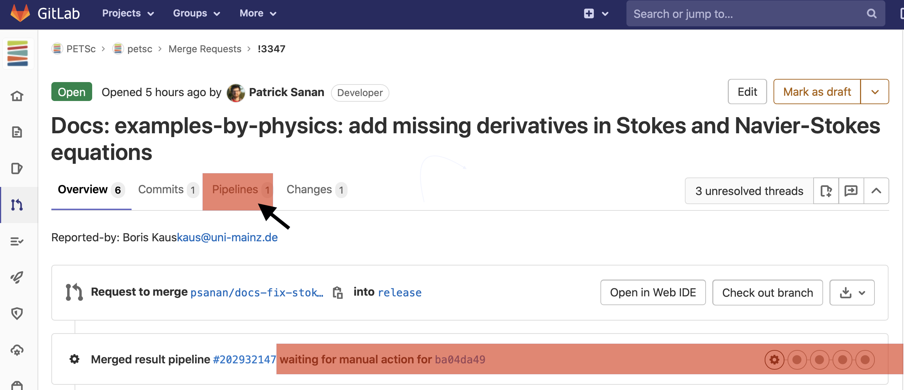
Fig. 35 Pipeline status for a merge request (MR)#
To un-pause the pipeline, click the “play” button (or start a new one with “Run Pipeline” if necessary).
{kind=link}
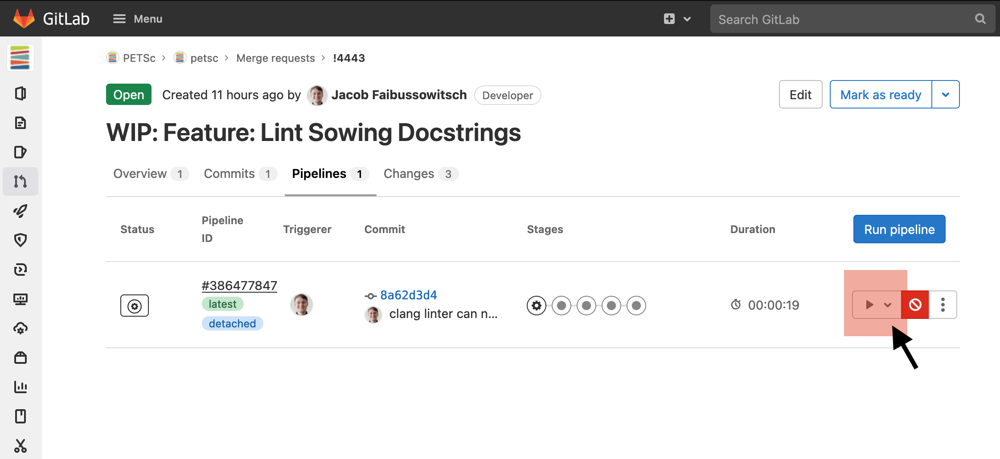
Fig. 36 Un-pausing a pipeline.#
A pipeline consists of “Stages” each with multiple “Jobs”. Every job is one configuration on one machine.
{kind=link}
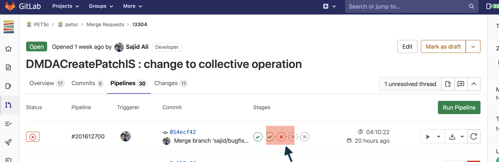
Fig. 37 Examining a failed pipeline stage.#
You can see the failed jobs by clicking on the X.
{kind=link}
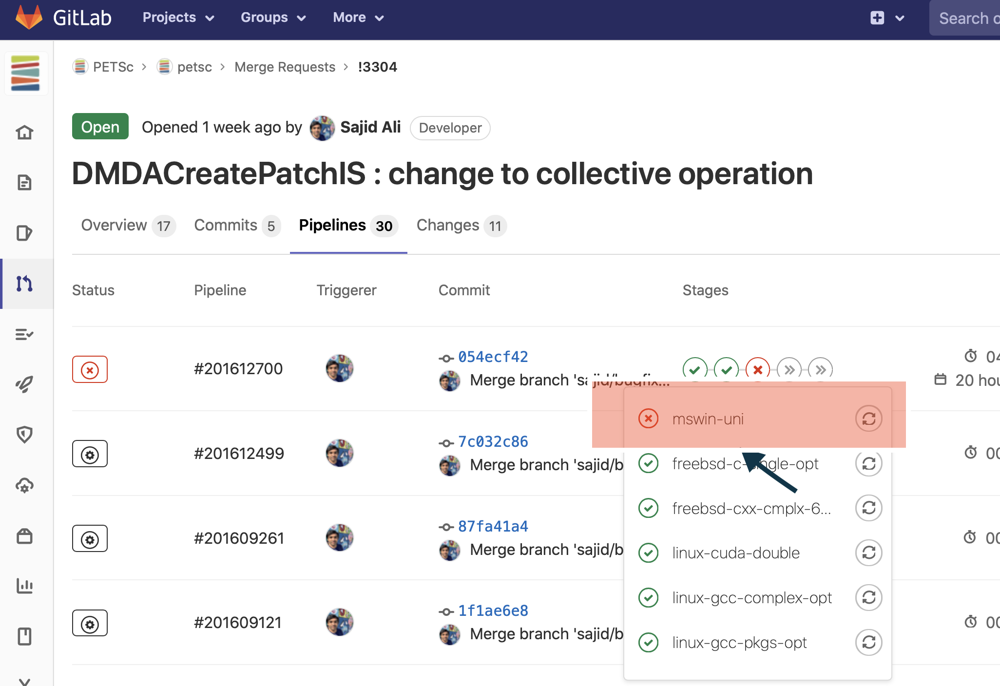
Fig. 38 Locating the exact failed job in a pipeline stage.#
A job is a run of the PETSc test harness and consists of many “examples”. Each test is a run of an example with a particular set of command line options
A failure in running the job’s tests will have FAILED and a list of the failed tests
{kind=link}
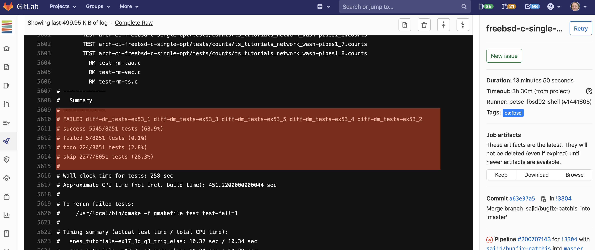
Fig. 39 Failed examples in a pipeline job.#
Search for not ok in the jobs output to find the exact failure
{kind=link}
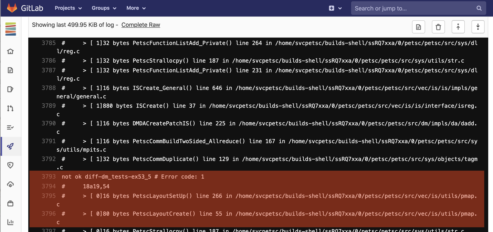
Fig. 40 A test that failed because of unfreed memory.#
After you have fixed a problem that appeared in a particular (set of) job(s) you may want to test your fix only on those jobs. To do this use
$ ./lib/petsc/bin/maint/runjobs.py [job_1 job_2 ... job_N]
where job_1 is, for example, linux-intel. The script will then prompt you to push the branch of the MR, once pushed the listed jobs will automatically be run
without you needing to access the GitLab website to un-pause the pipeline.
Examples of pipeline failures#
If your source code is not properly formatted you will see an error from make checkbadSource. Always run make checkbadSource on your machine
before submitting a pipeline.
{kind=link}
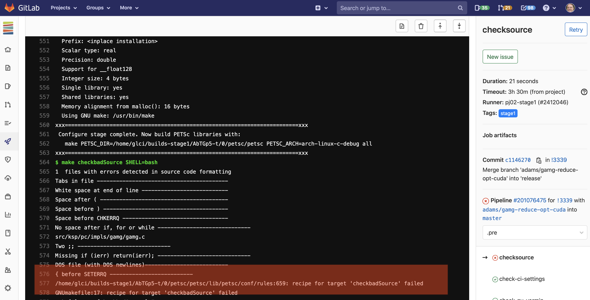
Fig. 41 checkbadSource failure.#
{kind=link}
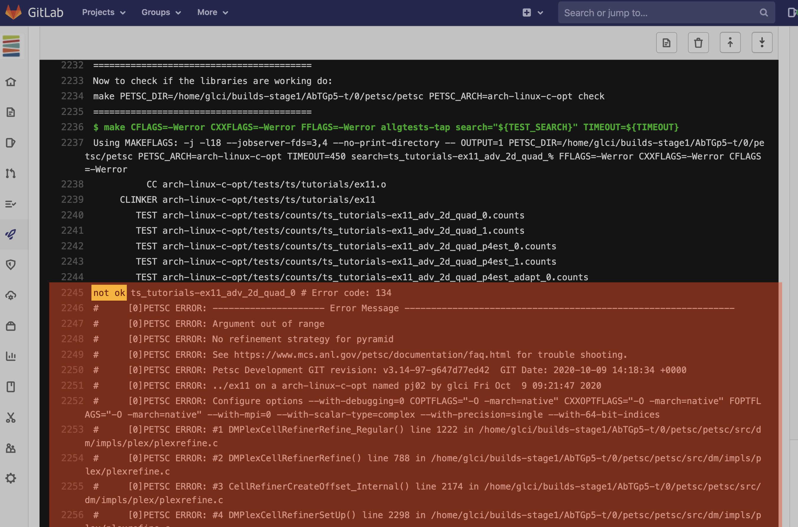
Fig. 42 A test failing with a PETSc error.#
{kind=link}
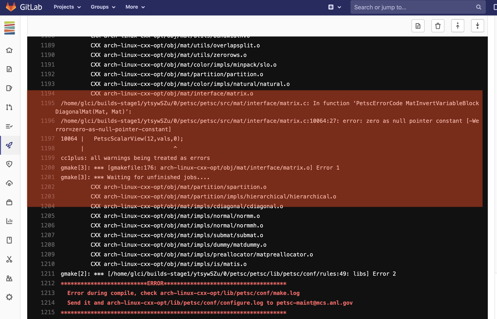
Fig. 43 Error in compiling the source code.#
You can download the configure.log file to find the problem using the “Browse” button and following the paths to the configure file.
{kind=link}
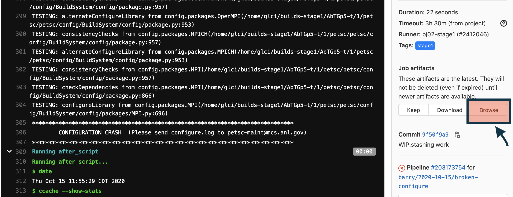
Fig. 44 Error in running configure.#
{kind=link}
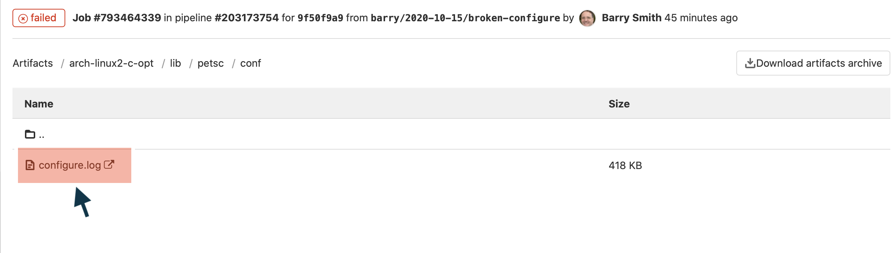
Fig. 45 Downloading configure.log from a failed pipeline job.#
The “Retry” button at the top of a previous pipeline or job does not use any new changes to the branch you have pushed since that pipeline was started - it retries the same Git commit that was previously tried. The job “Retry” should only be used this way when you suspect the testing system has some intermittent error unrelated to your branch.
Please report all “odd” errors in the testing that don’t seem related
to your branch in the PETSc Discord channel testing-ci-forum.
Check the forum’s threads to see if the error is listed and add it there, with a link to your MR (e.g. !1234). Otherwise, create a new thread.